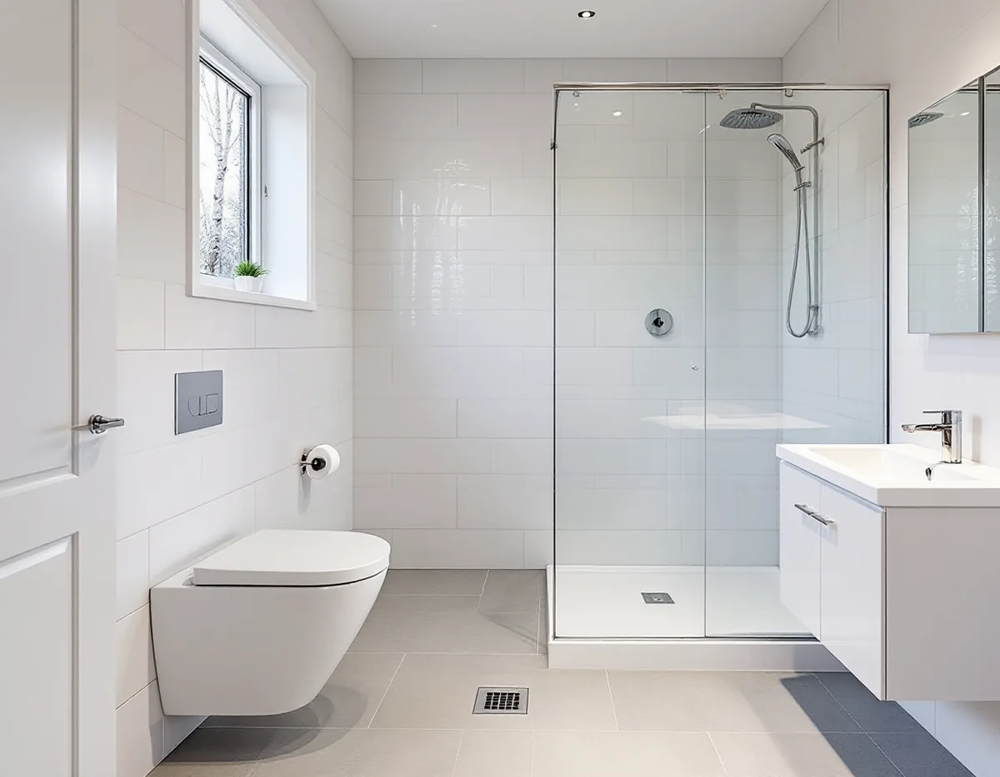
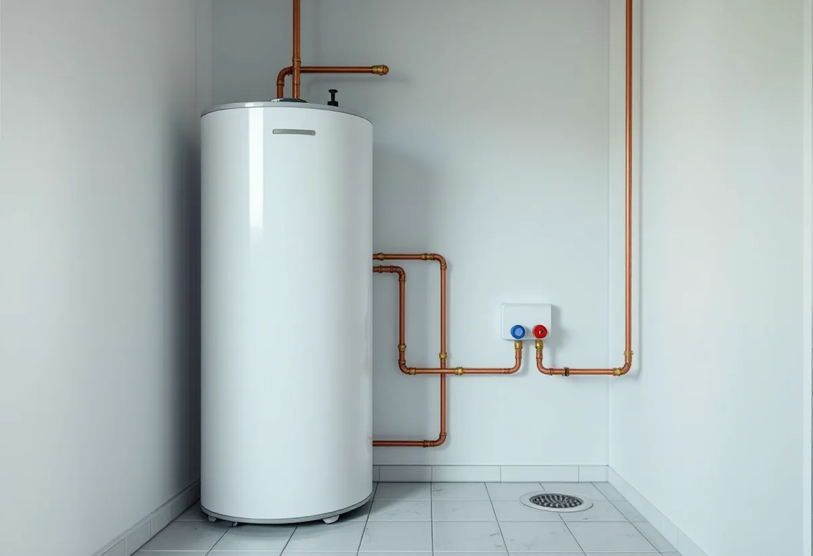

Platsbesök
Vi ser rummet, golvbrunnen och ledningarna och frågar om huset har kommunalt eller eget avlopp.
Ekerö kommun nämner just ett nytt badrum som exempel på en ändring av vatten och avlopp som ska anmälas. Därför börjar en badrumsrenovering på Mälaröarna med att reda ut vad som faktiskt ändras: läget på golvbrunnen, nya ledningar eller ett avlopp som får ta emot mer vatten. Geal Entreprenad AB river, bygger tätskikt och ytskikt och samordnar VVS och el, med gratis platsbesök och skriftligt kostnadsförslag.

Enligt SCB fanns det 9 131 bostäder i småhus i Ekerö kommun 2024. Kommunens sida om anmälan för vatten och avlopp säger att du ska göra en anmälan vid en större ändring av avloppet eller en helt ny installation. Som exempel nämns ett nytt badrum, en komplementbostad och en ny golvbrunn i garaget.
Ordningen är fast. Ansluts fastigheten för första gången går en anmälan först till Roslagsvatten, som har hand om det kommunala nätet. Sedan skickas anmälan till bygglovsenheten tillsammans med en kontrollplan och en VA-situationsplan. Arbetet får inte börja förrän kommunen har gett startbesked, och när det är klart lämnar du in den slutliga situationsplanen och den ifyllda kontrollplanen. Installationen får användas först när slutbeskedet har kommit.
För oss betyder det att badrummet ritas klart innan något rivs. Var golvbrunnen hamnar, hur ledningarna går och om toaletten flyttas avgör vad som ska stå i handlingarna, och kontrollplanen fylls i under arbetets gång i stället för i efterhand.

Det kommunala vattnet på Ekerö kommer från Mälaren och renas i Norsborgs vattenverk. Bor du på Lovön kommer det från Lovöverket, och Vifärna har ett eget vattenverk. Enligt kommunens sida om dricksvattnet är vattnet mjukt, 4,4 dH, med pH 8,2 på Ekerösidan och 8,1 i området kring Stenhamra.
Kommunen påpekar att mjukt vatten löser upp betong och cement och att risken för korrosion på metall ökar. Varmvattenberedare rostar sönder fortare, och vattenledningar kan skadas. När badrummet ändå är öppet är det därför ett bra tillfälle att se över beredarens ålder och skick och var den står, så att den kan bytas utan att det nya kaklet behöver röras.
Vid ett strömavbrott är skillnaden mellan orterna stor. I Stenhamra och Ekerö tätort håller vattentorn uppe trycket, medan trycket i Vifärna, Kungsberga, Munsö kyrkby, Munsö Söderby, Stenby och Hovgården skapas med pumpar. Där kan du bli utan vatten när strömmen går. En avstängningsventil som är lätt att nå gör det enklare att hantera både avbrott och läckor.
Kommunens avloppsnät renas i sex reningsverk som tillsammans kan ta emot avloppsvatten från 26 500 personer, och i dag är omkring 17 000 anslutna. Den som inte kan ansluta behöver enligt sidan om eget avlopp tillstånd för att anlägga ett enskilt avlopp, och för att ändra en befintlig anläggning krävs oftast en anmälan. Kommunen råder dig att kontakta miljöenheten för rådgivning innan du ansöker.
Miljöenheten inspekterar dessutom enskilda anläggningar områdesvis, i dag sådana som är äldre än tio år. Får huset ett andra badrum eller en dusch där det tidigare bara fanns ett enkelt våtrum är det klokt att ta reda på om anläggningen är dimensionerad för det, innan rummet byggs.
Har du egen brunn ansvarar du själv för att vattnet räcker och håller god kvalitet. På sidan om egen brunn hänvisar kommunen till Livsmedelsverkets råd att kontrollera vattnet minst vart tredje år, och provsvaret bör skickas i kopia till miljöenheten. Ett aktuellt prov är ett bra underlag när blandare och beredare väljs.
Ett badrum på Ekerö kan sitta i en villa från 1970-talet eller i ett sommarhus som har blivit helårsbostad. Golven, väggarna och ventilationen ser olika ut, och det avgör hur rummet byggs upp. Golvet i ett våtrum ska luta mot golvbrunnen så att vattnet inte leds ut i hallen, och väggarna byggs med skivor som tål ett tätskikt.
Ska golven i resten av huset bytas samtidigt finns mer under golvläggare på Ekerö, och om taket och ventilationsgenomföringarna under takläggare på Ekerö. Mer om hur vi bygger badrum generellt står på sidan om badrumsrenovering.
Vi ser rummet, golvbrunnen och ledningarna och frågar om huset har kommunalt eller eget avlopp.
Ändras VA-installationen tar vi fram ritningar till anmälan och ett förslag till kontrollplan.
Rivning, tätskikt, VVS, el och ytskikt står som separata poster i ett skriftligt förslag.
Efter startbesked rivs rummet ner till stommen och golvet byggs upp med fall mot brunnen.
Tätskiktet läggs, och behöriga installatörer drar rör och el.
Kontrollplanen fylls i, kaklet sätts och du får underlaget till slutbeskedet.
Rotavdraget är 30 procent av arbetskostnaden, högst 50 000 kr per person och år och högst 75 000 kr tillsammans med rutavdrag. Kakel- och klinkersättning och att dra in och reparera vatten- och avloppsledningar räknas som rotarbete i ett småhus som du äger, och det gäller även fritidshus.
Material ger inget avdrag. Geal drar avdraget direkt på fakturan, så du betalar bara din del av arbetskostnaden.
Mest avgör om VA-installationen ändras, om golvbrunnen flyttas, hur underlaget ser ut när det gamla har rivits och vilka ytskikt du väljer. Platsbesöket är gratis, och du får ett skriftligt kostnadsförslag innan något beställs.
Tätskikt, golvbrunn, el, VVS och intyg.
Badrumsrenovering i Stockholm →Takbyte, takbesiktning och plåtarbeten.
Takläggare på Ekerö →Stenhamra, Kungshatt och Adelsö.
Takrenovering på Ekerö →Nytt hus, vattenskydd och bergvärme.
Byggföretag på Ekerö →Egnahem, villaområden och äldre gårdar på Ekerö.
Fasadrenovering på Ekerö →Sommarvillor och 60-talsvillor på Ekerö.
Fönsterbyte på Ekerö →Villor i Stenhamra och omgjorda sommarhus.
Golvläggare på Ekerö →Vedspis, egen brunn och nya sopsorteringen.
Köksrenovering på Ekerö →Sommarvillor, stugor och villor på Mälaröarna.
Målare på Ekerö →Takvatten, solceller och plåttak på Ekerö.
Plåtslagare på Ekerö →Altan, gäststuga och snickeri nära Mälaren.
Snickare på Ekerö →